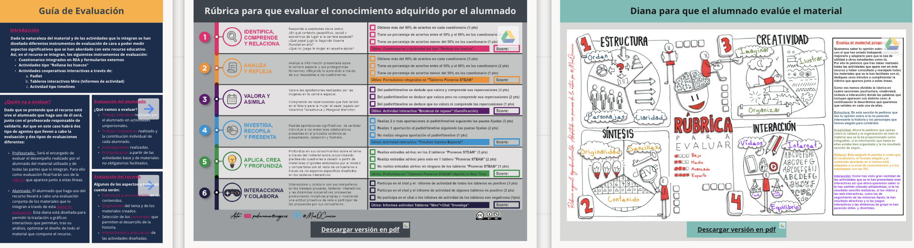

Evaluación del recurso
Dada la particularidad de un proyecto como "Las Mujeres que Contaban Estrellas", al no pertenecer a ninguna materia curricular y haberse diseñado los materiales que lo componen para cualquier miembro de la comunidad educativa, la rúbrica de evaluación del presente recurso, que es similar a la de todos los recursos educativos abiertos que la integran, está diseñada para medir el grado de validez de los materiales facilitados desde el proyecto.
No debe perderse de vista que cualquiera de las actividades, tareas o proyectos que lo integran ya cuenta con una evaluación ad-hoc.

Al acceder a la rúbrica, haciendo clic sobre la imagen superior a través de este enlace, se posibilitará su descarga en formato en pdf y en versión editable.